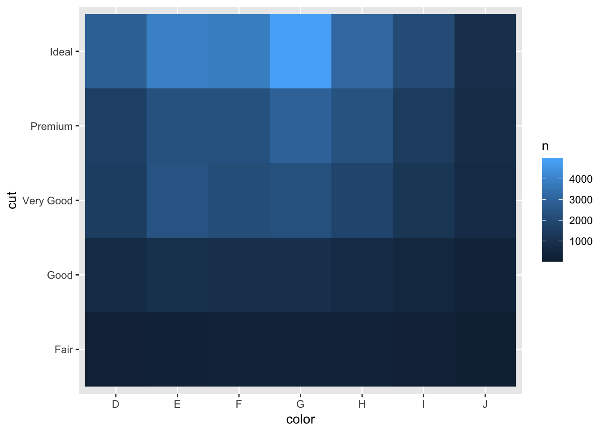
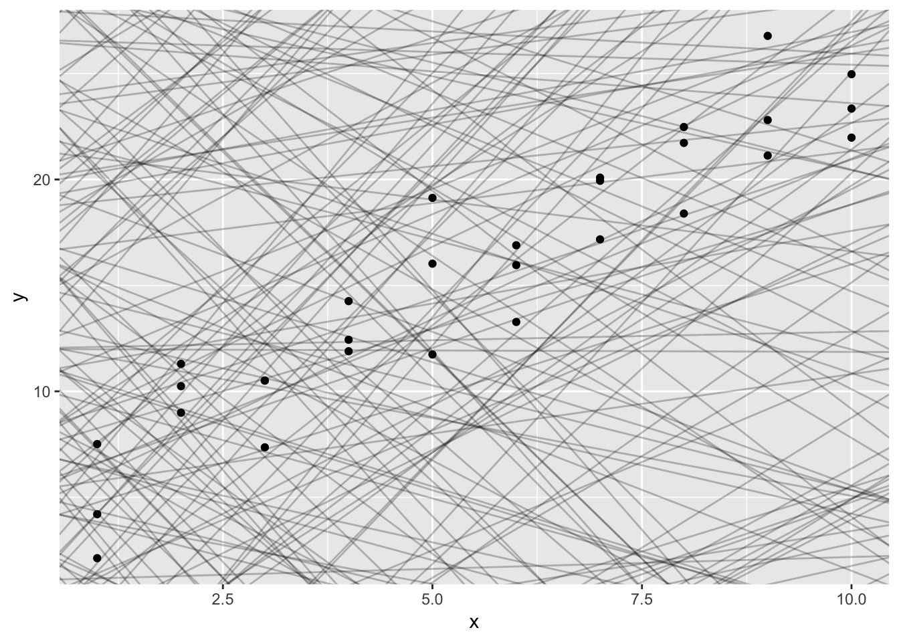

R for Data Science
Varied uses of ggplot2
## `geom_smooth()` using method = 'loess' and formula 'y ~ x'


## Loading required package: maps##
## Attaching package: 'maps'## The following object is masked from 'package:purrr':
##
## map
Data Transformations
# filter(mpg, model == "a4" & year > 2000)
# select(mpg, model:cyl)
# select(mpg, -(model:cyl))
# arrange(mpg, year, cty)
# mutate(mpg, ctyvshwy = cty - hwy)
# mutate(mpg, ctyvshwy = cty - hwy) %>% select(model, cty, hwy, ctyvshwy) %>% filter(ctyvshwy > -3)
# transmute(mpg, )if (!require("nycflights13")) install.packages("nycflights13")## Loading required package: nycflights13##
## Attaching package: 'nycflights13'## The following object is masked from 'package:rattle':
##
## weatherlibrary(nycflights13)
delays <- flights %>%
group_by(dest) %>%
summarise(
count = n(),
dist = mean(distance, na.rm = TRUE),
delay = mean(arr_delay, na.rm = TRUE)
) %>%
filter(count > 20, dest != "HNL")
ggplot(delays, aes(dist, delay)) +
geom_point(aes(size = count), alpha = 1/3) +
geom_smooth(se = FALSE, span = 0.6)## `geom_smooth()` using method = 'loess' and formula 'y ~ x'
# group_by(mpg, manufacturer) %>% summarise(count = n(), mean_hwy = median(hwy, na.rm = TRUE), mean_cty = mean(cty, na.rm = TRUE), diff = mean(hwy) - mean(cty)) %>% arrange(desc(mean_hwy)) %>% filter(count %in% c(1,3,6,9) | count > 15)## `geom_smooth()` using method = 'gam' and formula 'y ~ s(x, bs = "cs")'
# var = mtcars %>% group_by(cyl) %>% summarise(count = n(), mean_mpg = mean(mpg), mean_hp = mean(hp), median_wt = median(wt))
# ggplot(var, aes(cyl,mean_mpg)) + geom_point(aes(size = mean_hp, color = median_wt))

## Loading required package: hexbin
tb <- tribble(
~index, ~size, ~wt,
"1",5,10.1,
"2",3,11.4,
"3",2,9.98
)
tibble(
a = lubridate::now() + runif(1e3) * 86400,
b = lubridate::today() + runif(1e3) * 30,
c = 1:1e3,
d = runif(1e3),
e = sample(letters, 1e3, replace = TRUE)
)## # A tibble: 1,000 x 5
## a b c d e
## <dttm> <date> <int> <dbl> <chr>
## 1 2019-01-03 22:47:12 2019-01-22 1 0.780 y
## 2 2019-01-04 00:20:53 2019-01-22 2 0.747 z
## 3 2019-01-03 14:22:36 2019-01-31 3 0.351 s
## 4 2019-01-04 00:53:51 2019-01-20 4 0.547 j
## 5 2019-01-03 16:09:47 2019-01-04 5 0.293 k
## 6 2019-01-03 22:03:13 2019-02-01 6 0.767 n
## 7 2019-01-04 00:02:20 2019-01-24 7 0.604 t
## 8 2019-01-03 18:44:44 2019-01-31 8 0.00428 d
## 9 2019-01-04 12:23:46 2019-01-23 9 0.0183 v
## 10 2019-01-03 19:31:02 2019-01-21 10 0.544 j
## # ... with 990 more rowsdf <- tibble(
x = runif(5),
y = rnorm(5)
)
df## # A tibble: 5 x 2
## x y
## <dbl> <dbl>
## 1 0.467 0.953
## 2 0.417 -1.22
## 3 0.605 2.11
## 4 0.295 0.550
## 5 0.984 -0.397ggplot(df,aes(x, y)) +
geom_point(aes(color = x))
df$x## [1] 0.4670269 0.4172237 0.6049795 0.2952572 0.9836895df[["x"]]## [1] 0.4670269 0.4172237 0.6049795 0.2952572 0.9836895df[[1]]## [1] 0.4670269 0.4172237 0.6049795 0.2952572 0.9836895df %>% .$x## [1] 0.4670269 0.4172237 0.6049795 0.2952572 0.9836895df %>% .[["x"]]## [1] 0.4670269 0.4172237 0.6049795 0.2952572 0.9836895Reading Files
read_csv("first line\n1,2,3\n4,.,6\n1,0,1", skip = 1, col_names = c("x", "y", "z"), na = ".")## # A tibble: 3 x 3
## x y z
## <int> <int> <int>
## 1 1 2 3
## 2 4 NA 6
## 3 1 0 1Parsing a Vector
str(parse_logical(c(1,0,1)))## logi [1:3] TRUE FALSE TRUEstr(parse_date(c("2010-01-01", '2019-01-01', '1990-01-01','.'), na = "."))## Date[1:4], format: "2010-01-01" "2019-01-01" "1990-01-01" NAstr(parse_character(c("a","b")))## chr [1:2] "a" "b"parse_double("1,23", locale = locale(decimal_mark = ","))## [1] 1.23parse_number(c("$100","20%","40 dollars", "#50"))## [1] 100 20 40 50charToRaw("Leriche")## [1] 4c 65 72 69 63 68 65charToRaw(".")## [1] 2et <- charToRaw("b")
rawToChar(t)## [1] "b"library(hms)
parse_time("01:10 am")## 01:10:00guess_parser("2018-10-04")## [1] "date"Exporting/Importing Files
# write_excel_csv()
# write_csv(data, "filename.csv")
# readxl()
# haven() reads spss, stata and SAS files.# gather()
table4a <- tribble(
~"country",~`1999`,~`2000`,
"USA", 444, 888,
"BRA", 232, 458
)
table4a %>%
gather(`1999`, `2000`, key = "year", value = "cases")## # A tibble: 4 x 3
## country year cases
## <chr> <chr> <dbl>
## 1 USA 1999 444
## 2 BRA 1999 232
## 3 USA 2000 888
## 4 BRA 2000 458# spread()
table2 <- tribble(
~"country",~"year",~"type",~"count",
"USA", 1999, "cases", 759,
"USA", 1999, "population", 87432,
"USA", 2000, "cases", 888,
"USA", 2000, "population", 499843
)
table2## # A tibble: 4 x 4
## country year type count
## <chr> <dbl> <chr> <dbl>
## 1 USA 1999 cases 759
## 2 USA 1999 population 87432
## 3 USA 2000 cases 888
## 4 USA 2000 population 499843(table2 %>%
spread(key = type, value = count))## # A tibble: 2 x 4
## country year cases population
## <chr> <dbl> <dbl> <dbl>
## 1 USA 1999 759 87432
## 2 USA 2000 888 499843# separate()
table3 <- tribble(
~"country",~"year",~"rate",
"USA", 2000, "586/58943",
"USA", 2001, "588/76633",
"FRA", 2001, "45323/12345"
)
table5 <- table3 %>%
separate(rate, into = c("cases","population"), convert = TRUE) %>%
separate(year, into = c("century", "year"), sep = 2)# unite(new, century, year)
table5 %>%
unite(new, century, year, sep = "")## # A tibble: 3 x 4
## country new cases population
## <chr> <chr> <int> <int>
## 1 USA 2000 586 58943
## 2 USA 2001 588 76633
## 3 FRA 2001 45323 12345stocks <- tibble(
year = c(2015, 2015, 2015, 2015, 2016, 2016, 2016),
qtr = c( 1, 2, 3, 4, 2, 3, 4),
return = c(1.88, 0.59, 0.35, NA, 0.92, 0.17, 2.66)
)
stocks %>%
spread(qtr, return)## # A tibble: 2 x 5
## year `1` `2` `3` `4`
## <dbl> <dbl> <dbl> <dbl> <dbl>
## 1 2015 1.88 0.59 0.35 NA
## 2 2016 NA 0.92 0.17 2.66stocks %>%
spread(year, return) %>%
gather(year, return, `2015`:`2016`, na.rm = TRUE)## # A tibble: 6 x 3
## qtr year return
## * <dbl> <chr> <dbl>
## 1 1 2015 1.88
## 2 2 2015 0.59
## 3 3 2015 0.35
## 4 2 2016 0.92
## 5 3 2016 0.17
## 6 4 2016 2.66# complete()
stocks %>%
complete(year, qtr)## # A tibble: 8 x 3
## year qtr return
## <dbl> <dbl> <dbl>
## 1 2015 1 1.88
## 2 2015 2 0.59
## 3 2015 3 0.35
## 4 2015 4 NA
## 5 2016 1 NA
## 6 2016 2 0.92
## 7 2016 3 0.17
## 8 2016 4 2.66treatment <- tribble(
~ person, ~ treatment, ~response,
"Derrick Whitmore", 1, 7,
NA, 2, 10,
NA, 3, 9,
"Katherine Burke", 1, 4
)
treatment %>%
fill(person)## # A tibble: 4 x 3
## person treatment response
## <chr> <dbl> <dbl>
## 1 Derrick Whitmore 1 7
## 2 Derrick Whitmore 2 10
## 3 Derrick Whitmore 3 9
## 4 Katherine Burke 1 4who1 <- who %>%
gather(new_sp_m014:newrel_f65, key = "key", value = "cases", na.rm = TRUE)
who1 %>%
count(key)## # A tibble: 56 x 2
## key n
## <chr> <int>
## 1 new_ep_f014 1032
## 2 new_ep_f1524 1021
## 3 new_ep_f2534 1021
## 4 new_ep_f3544 1021
## 5 new_ep_f4554 1017
## 6 new_ep_f5564 1017
## 7 new_ep_f65 1014
## 8 new_ep_m014 1038
## 9 new_ep_m1524 1026
## 10 new_ep_m2534 1020
## # ... with 46 more rowswho2 <- who1 %>%
mutate(key = stringr::str_replace(key, "newrel", "new_rel"))
who2## # A tibble: 76,046 x 6
## country iso2 iso3 year key cases
## <chr> <chr> <chr> <int> <chr> <int>
## 1 Afghanistan AF AFG 1997 new_sp_m014 0
## 2 Afghanistan AF AFG 1998 new_sp_m014 30
## 3 Afghanistan AF AFG 1999 new_sp_m014 8
## 4 Afghanistan AF AFG 2000 new_sp_m014 52
## 5 Afghanistan AF AFG 2001 new_sp_m014 129
## 6 Afghanistan AF AFG 2002 new_sp_m014 90
## 7 Afghanistan AF AFG 2003 new_sp_m014 127
## 8 Afghanistan AF AFG 2004 new_sp_m014 139
## 9 Afghanistan AF AFG 2005 new_sp_m014 151
## 10 Afghanistan AF AFG 2006 new_sp_m014 193
## # ... with 76,036 more rowswho3 <- who2 %>%
separate(key,c("new","type","sexage"), sep = "_")
who3## # A tibble: 76,046 x 8
## country iso2 iso3 year new type sexage cases
## <chr> <chr> <chr> <int> <chr> <chr> <chr> <int>
## 1 Afghanistan AF AFG 1997 new sp m014 0
## 2 Afghanistan AF AFG 1998 new sp m014 30
## 3 Afghanistan AF AFG 1999 new sp m014 8
## 4 Afghanistan AF AFG 2000 new sp m014 52
## 5 Afghanistan AF AFG 2001 new sp m014 129
## 6 Afghanistan AF AFG 2002 new sp m014 90
## 7 Afghanistan AF AFG 2003 new sp m014 127
## 8 Afghanistan AF AFG 2004 new sp m014 139
## 9 Afghanistan AF AFG 2005 new sp m014 151
## 10 Afghanistan AF AFG 2006 new sp m014 193
## # ... with 76,036 more rowswho3 %>%
count(new)## # A tibble: 1 x 2
## new n
## <chr> <int>
## 1 new 76046who4 <- who3 %>%
select(-new, -iso2, -iso3)
who5 <- who4 %>%
separate(sexage, c("sex","age"), sep = 1)
who5## # A tibble: 76,046 x 6
## country year type sex age cases
## <chr> <int> <chr> <chr> <chr> <int>
## 1 Afghanistan 1997 sp m 014 0
## 2 Afghanistan 1998 sp m 014 30
## 3 Afghanistan 1999 sp m 014 8
## 4 Afghanistan 2000 sp m 014 52
## 5 Afghanistan 2001 sp m 014 129
## 6 Afghanistan 2002 sp m 014 90
## 7 Afghanistan 2003 sp m 014 127
## 8 Afghanistan 2004 sp m 014 139
## 9 Afghanistan 2005 sp m 014 151
## 10 Afghanistan 2006 sp m 014 193
## # ... with 76,036 more rowsplanes %>%
count(tailnum) %>%
filter(n>1)## # A tibble: 0 x 2
## # ... with 2 variables: tailnum <chr>, n <int>weather %>%
count(year, month, day, hour, origin) %>%
filter(n>1)## # A tibble: 3 x 6
## year month day hour origin n
## <dbl> <dbl> <int> <int> <chr> <int>
## 1 2013 11 3 1 EWR 2
## 2 2013 11 3 1 JFK 2
## 3 2013 11 3 1 LGA 2flights2 <- flights %>%
select(year:day, hour, origin, dest, tailnum, carrier)
flights2 ## # A tibble: 336,776 x 8
## year month day hour origin dest tailnum carrier
## <int> <int> <int> <dbl> <chr> <chr> <chr> <chr>
## 1 2013 1 1 5 EWR IAH N14228 UA
## 2 2013 1 1 5 LGA IAH N24211 UA
## 3 2013 1 1 5 JFK MIA N619AA AA
## 4 2013 1 1 5 JFK BQN N804JB B6
## 5 2013 1 1 6 LGA ATL N668DN DL
## 6 2013 1 1 5 EWR ORD N39463 UA
## 7 2013 1 1 6 EWR FLL N516JB B6
## 8 2013 1 1 6 LGA IAD N829AS EV
## 9 2013 1 1 6 JFK MCO N593JB B6
## 10 2013 1 1 6 LGA ORD N3ALAA AA
## # ... with 336,766 more rowsflights2 %>%
select(-origin, -dest) %>%
left_join(airlines, by = "carrier")## # A tibble: 336,776 x 7
## year month day hour tailnum carrier name
## <int> <int> <int> <dbl> <chr> <chr> <chr>
## 1 2013 1 1 5 N14228 UA United Air Lines Inc.
## 2 2013 1 1 5 N24211 UA United Air Lines Inc.
## 3 2013 1 1 5 N619AA AA American Airlines Inc.
## 4 2013 1 1 5 N804JB B6 JetBlue Airways
## 5 2013 1 1 6 N668DN DL Delta Air Lines Inc.
## 6 2013 1 1 5 N39463 UA United Air Lines Inc.
## 7 2013 1 1 6 N516JB B6 JetBlue Airways
## 8 2013 1 1 6 N829AS EV ExpressJet Airlines Inc.
## 9 2013 1 1 6 N593JB B6 JetBlue Airways
## 10 2013 1 1 6 N3ALAA AA American Airlines Inc.
## # ... with 336,766 more rowsflights2 %>%
select(-origin, -dest) %>%
mutate(name = airlines$name[match(carrier, airlines$carrier)])## # A tibble: 336,776 x 7
## year month day hour tailnum carrier name
## <int> <int> <int> <dbl> <chr> <chr> <chr>
## 1 2013 1 1 5 N14228 UA United Air Lines Inc.
## 2 2013 1 1 5 N24211 UA United Air Lines Inc.
## 3 2013 1 1 5 N619AA AA American Airlines Inc.
## 4 2013 1 1 5 N804JB B6 JetBlue Airways
## 5 2013 1 1 6 N668DN DL Delta Air Lines Inc.
## 6 2013 1 1 5 N39463 UA United Air Lines Inc.
## 7 2013 1 1 6 N516JB B6 JetBlue Airways
## 8 2013 1 1 6 N829AS EV ExpressJet Airlines Inc.
## 9 2013 1 1 6 N593JB B6 JetBlue Airways
## 10 2013 1 1 6 N3ALAA AA American Airlines Inc.
## # ... with 336,766 more rowsflights2 %>%
left_join(airports, c("dest" = "faa")) %>%
arrange(origin)## # A tibble: 336,776 x 15
## year month day hour origin dest tailnum carrier name lat lon
## <int> <int> <int> <dbl> <chr> <chr> <chr> <chr> <chr> <dbl> <dbl>
## 1 2013 1 1 5 EWR IAH N14228 UA Geor… 30.0 -95.3
## 2 2013 1 1 5 EWR ORD N39463 UA Chic… 42.0 -87.9
## 3 2013 1 1 6 EWR FLL N516JB B6 Fort… 26.1 -80.2
## 4 2013 1 1 6 EWR SFO N53441 UA San … 37.6 -122.
## 5 2013 1 1 6 EWR LAS N76515 UA Mc C… 36.1 -115.
## 6 2013 1 1 6 EWR PBI N644JB B6 Palm… 26.7 -80.1
## 7 2013 1 1 6 EWR MIA N633AA AA Miam… 25.8 -80.3
## 8 2013 1 1 6 EWR MIA N53442 UA Miam… 25.8 -80.3
## 9 2013 1 1 6 EWR ORD N9EAMQ MQ Chic… 42.0 -87.9
## 10 2013 1 1 6 EWR ATL N326NB DL Hart… 33.6 -84.4
## # ... with 336,766 more rows, and 4 more variables: alt <int>, tz <dbl>,
## # dst <chr>, tzone <chr>flights2 %>%
left_join(airports, c("origin" = "faa")) %>%
arrange(origin)## # A tibble: 336,776 x 15
## year month day hour origin dest tailnum carrier name lat lon
## <int> <int> <int> <dbl> <chr> <chr> <chr> <chr> <chr> <dbl> <dbl>
## 1 2013 1 1 5 EWR IAH N14228 UA Newa… 40.7 -74.2
## 2 2013 1 1 5 EWR ORD N39463 UA Newa… 40.7 -74.2
## 3 2013 1 1 6 EWR FLL N516JB B6 Newa… 40.7 -74.2
## 4 2013 1 1 6 EWR SFO N53441 UA Newa… 40.7 -74.2
## 5 2013 1 1 6 EWR LAS N76515 UA Newa… 40.7 -74.2
## 6 2013 1 1 6 EWR PBI N644JB B6 Newa… 40.7 -74.2
## 7 2013 1 1 6 EWR MIA N633AA AA Newa… 40.7 -74.2
## 8 2013 1 1 6 EWR MIA N53442 UA Newa… 40.7 -74.2
## 9 2013 1 1 6 EWR ORD N9EAMQ MQ Newa… 40.7 -74.2
## 10 2013 1 1 6 EWR ATL N326NB DL Newa… 40.7 -74.2
## # ... with 336,766 more rows, and 4 more variables: alt <int>, tz <dbl>,
## # dst <chr>, tzone <chr>airports %>%
semi_join(flights, c("faa" = "dest")) %>%
filter(lon > -140) %>%
ggplot(aes(lon, lat)) +
borders("state") +
geom_point(aes(color = alt)) +
coord_quickmap()(top_dest <- flights %>%
count(dest, sort = TRUE) %>%
head(10))## # A tibble: 10 x 2
## dest n
## <chr> <int>
## 1 ORD 17283
## 2 ATL 17215
## 3 LAX 16174
## 4 BOS 15508
## 5 MCO 14082
## 6 CLT 14064
## 7 SFO 13331
## 8 FLL 12055
## 9 MIA 11728
## 10 DCA 9705top_dest <- flights %>%
count(dest, sort = TRUE) %>%
left_join(airports, c("dest" = "faa"))
top_dest## # A tibble: 105 x 9
## dest n name lat lon alt tz dst tzone
## <chr> <int> <chr> <dbl> <dbl> <int> <dbl> <chr> <chr>
## 1 ORD 17283 Chicago Ohare In… 42.0 -87.9 668 -6 A America/C…
## 2 ATL 17215 Hartsfield Jacks… 33.6 -84.4 1026 -5 A America/N…
## 3 LAX 16174 Los Angeles Intl 33.9 -118. 126 -8 A America/L…
## 4 BOS 15508 General Edward L… 42.4 -71.0 19 -5 A America/N…
## 5 MCO 14082 Orlando Intl 28.4 -81.3 96 -5 A America/N…
## 6 CLT 14064 Charlotte Dougla… 35.2 -80.9 748 -5 A America/N…
## 7 SFO 13331 San Francisco In… 37.6 -122. 13 -8 A America/L…
## 8 FLL 12055 Fort Lauderdale … 26.1 -80.2 9 -5 A America/N…
## 9 MIA 11728 Miami Intl 25.8 -80.3 8 -5 A America/N…
## 10 DCA 9705 Ronald Reagan Wa… 38.9 -77.0 15 -5 A America/N…
## # ... with 95 more rowsflights %>%
filter(dest %in% top_dest$dest)## # A tibble: 336,776 x 19
## year month day dep_time sched_dep_time dep_delay arr_time
## <int> <int> <int> <int> <int> <dbl> <int>
## 1 2013 1 1 517 515 2 830
## 2 2013 1 1 533 529 4 850
## 3 2013 1 1 542 540 2 923
## 4 2013 1 1 544 545 -1 1004
## 5 2013 1 1 554 600 -6 812
## 6 2013 1 1 554 558 -4 740
## 7 2013 1 1 555 600 -5 913
## 8 2013 1 1 557 600 -3 709
## 9 2013 1 1 557 600 -3 838
## 10 2013 1 1 558 600 -2 753
## # ... with 336,766 more rows, and 12 more variables: sched_arr_time <int>,
## # arr_delay <dbl>, carrier <chr>, flight <int>, tailnum <chr>,
## # origin <chr>, dest <chr>, air_time <dbl>, distance <dbl>, hour <dbl>,
## # minute <dbl>, time_hour <dttm>Strings
x <- "\u00b5"
x## [1] "µ"string <- c("x","y","z")
string## [1] "x" "y" "z"str_c("x","y","z")## [1] "xyz"str_c("x","y","z", sep = ", ")## [1] "x, y, z"name <- "Tomas"
time_of_day <- "morning"
birthday <- FALSE
str_c(
"Good ", time_of_day, " ", name,
if (birthday) " and HAPPY BIRTHDAY",
"."
)## [1] "Good morning Tomas."str_c(c("x", "y", "z"), collapse = ":")## [1] "x:y:z"x <- c("Apple", "Banana", "Pear")
str_sub(x, 1, 2)## [1] "Ap" "Ba" "Pe"str_sub(x, -3, -1)## [1] "ple" "ana" "ear"str_sub(x, 1, 1) <- str_to_lower(str_sub(x, 1, 1))
x## [1] "apple" "banana" "pear"x <- c("x","d","y","u","q","a","b")
str_sort(x)## [1] "a" "b" "d" "q" "u" "x" "y"x <- c("xylophone","apples","pears","chicken","pork","ate","bee")
str_view(x, "a")Determine Matches
writeLines(x)## xylophone
## apples
## pears
## chicken
## pork
## ate
## beestr_detect(x, "e")## [1] TRUE TRUE TRUE TRUE FALSE TRUE TRUEsum(str_detect(words, "[aeiou]$"))## [1] 271mean(str_detect(words, "[aeiou]$"))## [1] 0.2765306no_vowels_1 <- !str_detect(words, "[aeiou]")
no_vowels_2 <- str_detect(words, "^[^aeiou]+$")
identical(no_vowels_1, no_vowels_2)## [1] TRUEModels
if (!require("modelr")) install.packages("modelr")## Loading required package: modelr##
## Attaching package: 'modelr'## The following object is masked from 'package:broom':
##
## bootstraplibrary(modelr)
options(na.action = na.warn)
ggplot(sim1, aes(x, y)) +
geom_point()
models <- tibble(
a1 = runif(250, -20, 40),
a2 = runif(250, -5, 5)
)
ggplot(sim1,aes(x,y)) +
geom_abline(aes(intercept=a1,slope=a2), models, alpha = 1/4) +
geom_point()
model1 <- function(a, data) {
a[1] + data$x * a[2]
}
model1(c(5,5), sim1)## [1] 10 10 10 15 15 15 20 20 20 25 25 25 30 30 30 35 35 35 40 40 40 45 45
## [24] 45 50 50 50 55 55 55Root-mean-squared deviation
measure_dist <- function(mod, data) {
diff <- data$y - model1(mod, data)
diff^2 %>%
mean() %>%
sqrt()
}
measure_dist(c(5,5), sim1)## [1] 19.10774Fitting linear models with lm()
sim1_mod <- lm(y ~ x, data = sim1)
coef(sim1_mod)## (Intercept) x
## 4.220822 2.051533sim1a <- tibble(
x = rep(1:10, each = 3),
y = x * 1.5 + 6 + rt(length(x), df = 2)
)
sim1a_mod <- lm(y ~ x, data = sim1a)
coef(sim1a_mod)## (Intercept) x
## 4.933794 1.657851grid <- sim1 %>%
data_grid(x)
grid## # A tibble: 10 x 1
## x
## <int>
## 1 1
## 2 2
## 3 3
## 4 4
## 5 5
## 6 6
## 7 7
## 8 8
## 9 9
## 10 10grid <- grid %>%
add_predictions(sim1_mod)
grid## # A tibble: 10 x 2
## x pred
## <int> <dbl>
## 1 1 6.27
## 2 2 8.32
## 3 3 10.4
## 4 4 12.4
## 5 5 14.5
## 6 6 16.5
## 7 7 18.6
## 8 8 20.6
## 9 9 22.7
## 10 10 24.7primary <- function(x) {
if (min(x %% 2:(x-1)) > 0) {
return(x)
}else{
return(0)
}
}
array = c(1:1000)
count = 0
for (x in array) {
if (x == 1) {
next
}
if (primary(x) > 0) {
print(x)
count = count + 1
}
}## [1] 3
## [1] 5
## [1] 7
## [1] 11
## [1] 13
## [1] 17
## [1] 19
## [1] 23
## [1] 29
## [1] 31
## [1] 37
## [1] 41
## [1] 43
## [1] 47
## [1] 53
## [1] 59
## [1] 61
## [1] 67
## [1] 71
## [1] 73
## [1] 79
## [1] 83
## [1] 89
## [1] 97
## [1] 101
## [1] 103
## [1] 107
## [1] 109
## [1] 113
## [1] 127
## [1] 131
## [1] 137
## [1] 139
## [1] 149
## [1] 151
## [1] 157
## [1] 163
## [1] 167
## [1] 173
## [1] 179
## [1] 181
## [1] 191
## [1] 193
## [1] 197
## [1] 199
## [1] 211
## [1] 223
## [1] 227
## [1] 229
## [1] 233
## [1] 239
## [1] 241
## [1] 251
## [1] 257
## [1] 263
## [1] 269
## [1] 271
## [1] 277
## [1] 281
## [1] 283
## [1] 293
## [1] 307
## [1] 311
## [1] 313
## [1] 317
## [1] 331
## [1] 337
## [1] 347
## [1] 349
## [1] 353
## [1] 359
## [1] 367
## [1] 373
## [1] 379
## [1] 383
## [1] 389
## [1] 397
## [1] 401
## [1] 409
## [1] 419
## [1] 421
## [1] 431
## [1] 433
## [1] 439
## [1] 443
## [1] 449
## [1] 457
## [1] 461
## [1] 463
## [1] 467
## [1] 479
## [1] 487
## [1] 491
## [1] 499
## [1] 503
## [1] 509
## [1] 521
## [1] 523
## [1] 541
## [1] 547
## [1] 557
## [1] 563
## [1] 569
## [1] 571
## [1] 577
## [1] 587
## [1] 593
## [1] 599
## [1] 601
## [1] 607
## [1] 613
## [1] 617
## [1] 619
## [1] 631
## [1] 641
## [1] 643
## [1] 647
## [1] 653
## [1] 659
## [1] 661
## [1] 673
## [1] 677
## [1] 683
## [1] 691
## [1] 701
## [1] 709
## [1] 719
## [1] 727
## [1] 733
## [1] 739
## [1] 743
## [1] 751
## [1] 757
## [1] 761
## [1] 769
## [1] 773
## [1] 787
## [1] 797
## [1] 809
## [1] 811
## [1] 821
## [1] 823
## [1] 827
## [1] 829
## [1] 839
## [1] 853
## [1] 857
## [1] 859
## [1] 863
## [1] 877
## [1] 881
## [1] 883
## [1] 887
## [1] 907
## [1] 911
## [1] 919
## [1] 929
## [1] 937
## [1] 941
## [1] 947
## [1] 953
## [1] 967
## [1] 971
## [1] 977
## [1] 983
## [1] 991
## [1] 997count## [1] 167